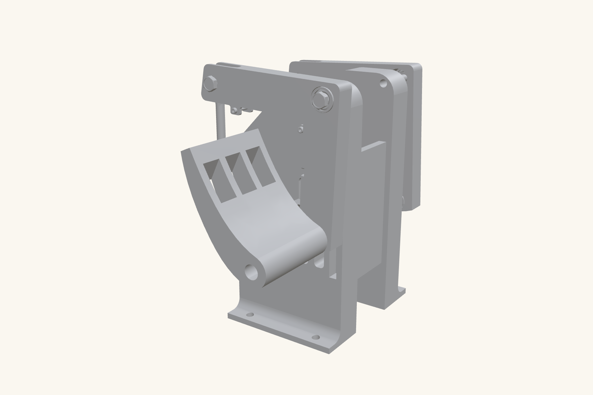
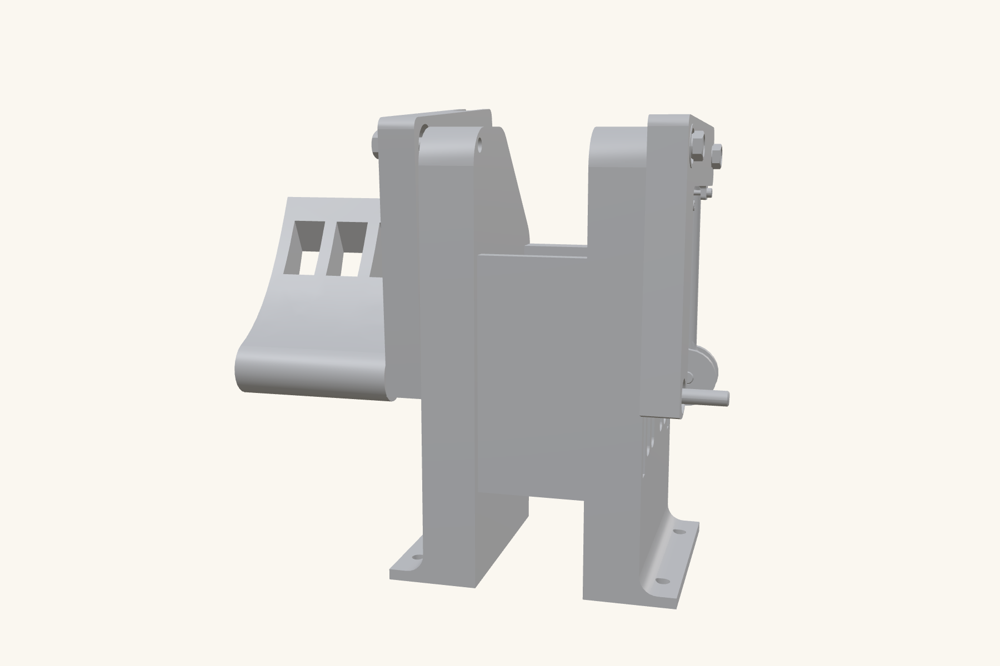
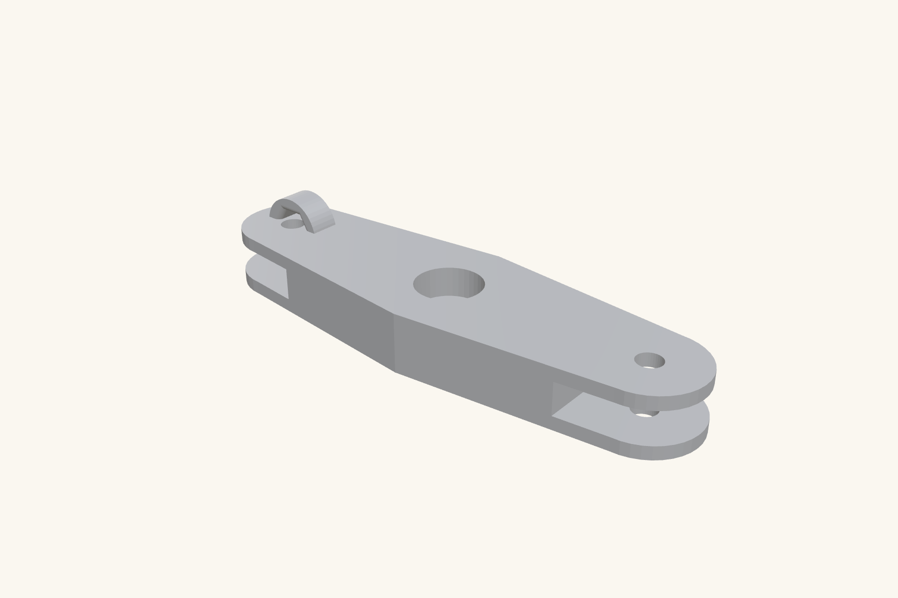

Rudder pedals that feel like the jet
I fly ultralights, and consumer sim pedals never felt right: short throw, toy-like centering, and potentiometers that get jittery with wear. So I built my own: F-15/F-18-style geometry, three axes, magnetic sensing that can’t wear out, and firmware any PC recognizes without drivers.

| Role | Design, print, wiring, and firmware (solo) | Type | Personal project |
|---|---|---|---|
| Tools | SolidWorks · FDM 3D printing · Teensy 2.0 · A1301 Hall-effect sensors · C++ | Timeline | 2026 |
| Result | 3-axis plug-and-play USB HID controller | Status | In daily use at my sim |
The problem
Rudder pedals do three jobs at once: yaw through the sliding pedal motion, plus independent left and right toe brakes. Consumer hardware compresses all of that into short, springy travel measured by potentiometers, which drift, jitter, and eventually wear out. I wanted fighter-style pedal geometry with sensing that stays clean for the life of the hardware.
Constraints
- Three independent axes (yaw plus left and right toe brakes) in one mechanism
- Every structural part printable on a hobby FDM printer
- No contact-based sensing anywhere in the signal path
- Plug-and-play: recognized as a standard game controller by any PC, no drivers, no companion app
Mechanism first
I designed the three-axis assembly in SolidWorks around F-15/F-18-style pedal geometry and 3D-printed it, iterating on pivot placement and return feel. Rapid prototyping earns its name here: pedal feel is subjective, and the fastest way to evaluate a linkage is to stand on it.

Sensing without touching
Each axis is measured by an A1301 Hall-effect sensor reading a magnet on the moving part: no wiper, no contact, nothing to wear. The output is smooth, continuous, and identical on day one and day one thousand. That single component choice eliminates the entire failure mode that ruins potentiometer-based controls.

Firmware that gets out of the way
A Teensy 2.0 reads the three sensors and presents itself to the PC as a standard USB HID game controller; plug it in and every simulator sees it instantly. The C++ firmware handles per-axis calibration (learning each axis’s real min/center/max) and configurable deadzone logic, so mechanical imperfection never reaches the sim.
The result
- 3 independent axes with fighter-style pedal geometry
- Zero-wear magnetic sensing, no potentiometers anywhere
- Plug-and-play USB HID: no drivers, works in any simulator
- total parts cost vs. commercial equivalent here
What I learned
This project is where mechanical design and embedded software stopped being separate skills for me. The pedal feel comes from the linkage; the precision comes from the sensor choice; the usability comes from the firmware, and no one of those could compensate for getting another one wrong.